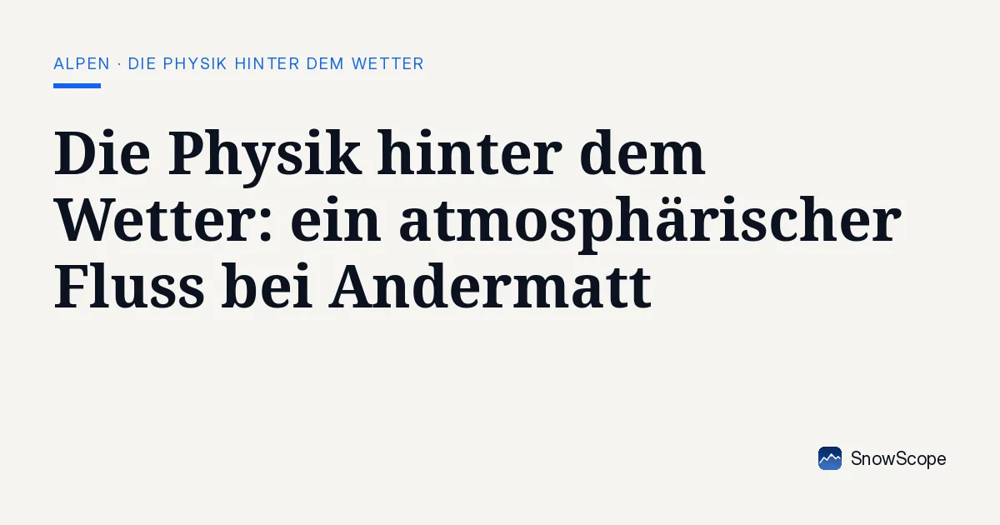

Die Physik hinter dem Wetter: ein atmosphärischer Fluss bei Andermatt
In Andermatt (2963 m) zeigt die Prognose 75 mm Niederschlag vom 15. November bis 20. November. In den nassen Stunden liegt die Nullgradgrenze bei etwa 2160 m, die Schneefallgrenze also bei etwa 1860 m.
Die Live-Schneeprognose für Andermatt in der SnowScope-AppSchneehöhen, Pulverschnee-Alarme und 3D-Karte, gratis.
Was die Prognose zeigt
In Andermatt (2963 m) zeigt die Prognose 75 mm Niederschlag vom 15. November bis 20. November. In den nassen Stunden liegt die Nullgradgrenze bei etwa 2160 m, die Schneefallgrenze also bei etwa 1860 m.

Die Physik
Ein atmosphärischer Fluss ist ein langes, schmales Luftband, das viel Wasserdampf transportiert. Ab 250 kg Wasser pro Meter und Sekunde spricht man von einem atmosphärischen Fluss, ab 750 von einem starken. Trifft er auf ein Gebirge, muss die Luft aufsteigen und abkühlen, der Dampf kondensiert und die Luvhänge bekommen den meisten Regen und Schnee.


Was das für dich bedeutet
- Prognosen ändern sich: Schau vor dem Aufbruch nochmals auf die Schneekarte.
- Abseits der Piste: Lies immer den offiziellen Lawinenlagebericht.
Quellen und Nachweise
- Ralph, F. M., Dettinger, M. D., Cairns, M. M., Galarneau, T. J. and Eylander, J. (2018). Defining 'atmospheric river': how the Glossary of Meteorology helped resolve a debate. Bulletin of the American Meteorological Society 99, 837-839. doi.org/10.1175/BAMS-D-17-0157.1
- Ralph, F. M., Rutz, J. J., Cordeira, J. M., Dettinger, M. D. et al. (2019). A scale to characterize the strength and impacts of atmospheric rivers. Bulletin of the American Meteorological Society 100, 269-289. doi.org/10.1175/BAMS-D-18-0023.1
- American Meteorological Society, Glossary of Meteorology: 'Atmospheric river'. glossary.ametsoc.org/wiki/Atmospheric_river
- Roe, G. H. (2005). Orographic precipitation. Annual Review of Earth and Planetary Sciences 33, 645-671. doi.org/10.1146/annurev.earth.33.092203.122541
- Minder, J. R., Durran, D. R. and Roe, G. H. (2011). Mesoscale controls on the mountainside snow line. Journal of the Atmospheric Sciences 68, 2107-2127. doi.org/10.1175/JAS-D-10-05006.1
- Wallace, J. M. and Hobbs, P. V. (2006). Atmospheric Science: An Introductory Survey, 2nd edition. Academic Press / Elsevier. ISBN 978-0-12-732951-2.
- Forecast data: Open-Meteo.com (CC BY 4.0), from the ECMWF IFS (CC BY 4.0), DWD ICON and NOAA GFS models; snow depth: SnowScope snow model. open-meteo.com/
Zu diesen Zahlen
Zahlen aus der Prognose vom 15. November: Niederschlag, Temperatur und Wind in mehreren Höhen an den genannten Orten. Die Nullgradgrenze ist aus dem Temperaturprofil berechnet, die Schneefallgrenze etwa 300 m darunter angesetzt. Prognosen ändern sich.
Diesen Bericht zitieren
Für Forschung, Lehre oder Presse: Zahlen und Grafiken sind unter CC BY 4.0 mit dieser Quellenangabe frei nutzbar.
SnowScope (2026), Die Physik hinter dem Wetter: ein atmosphärischer Fluss bei Andermatt, https://snowscope.app/blog/de/2026/11/alps-physics-an-atmospheric-river-15-november-2026.html, abgerufen am 2026-11-15
SnowScope (Atlas Labs). (2026, November 15). Die Physik hinter dem Wetter: ein atmosphärischer Fluss bei Andermatt. SnowScope snow reports. https://snowscope.app/blog/de/2026/11/alps-physics-an-atmospheric-river-15-november-2026.html
BibTeX
@misc{snowscope2026alpsphysicsanatmospheric,
author = {{SnowScope (Atlas Labs)}},
title = {Die Physik hinter dem Wetter: ein atmosphärischer Fluss bei Andermatt},
year = {2026},
month = nov,
howpublished = {\url{https://snowscope.app/blog/de/2026/11/alps-physics-an-atmospheric-river-15-november-2026.html}},
note = {Published 2026-11-15 17:57 UTC; accessed 2026-11-15}
}· CC BY 4.0 · Methoden, Daten und Werkzeuge →
Andermatt folgen
Gratis: eine Nachricht, wenn Neuschnee kommt, und jeden Morgen die Vorhersage.
Weitere Schneeberichte

Der Pistenplan von Sillian (Hochpustertal) mit unserer Schneeschicht am 13. November 2026: 8,6 cm am Gipfel auf 2399 m, untere Hänge aper, und eine Woche mit Regen und Schnee gemischt, Schneefallgrenze bei 1.800 bis 2.000 m.

Die Schneehöhe in Sölden am 13. November 2026: rund 9 cm oben auf 3245 m, 5 cm an der Mittelstation, nichts im Tal auf 1346 m. Diese Woche 25 cm oben, Regen unter etwa 1620 m. Gletscher gegen Dorf, dazu 46 vergangene Winter.